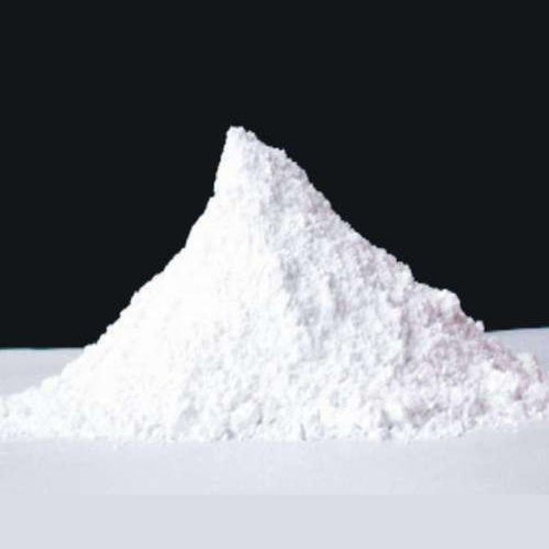

Calcite Powder in Paper Industries: Applications and Benefits
Calcite powder (calcium carbonate) is a fundamental component in modern paper manufacturing, serving as both a filler and coating pigment. Its unique properties make it essential for producing high-quality paper with improved brightness, opacity, smoothness, and printability while reducing production costs and environmental impact.
Published on January 15, 2024
By Shikhar Microns

Why Use Calcite Powder in Paper Manufacturing?
- Enhanced Brightness: Improves paper whiteness and appearance
- Better Opacity: Reduces show-through and improves print quality
- Cost Effective: Reduces paper production costs
- Environmental Benefits: More sustainable than wood pulp
- Versatile: Suitable for various paper grades
Why Use Calcite Powder in Paper Manufacturing?
Enhanced Brightness
Superior whiteness and brightness for premium paper quality
Improved Opacity
Better hiding power and reduced show-through
Cost Efficiency
Reduces fiber costs while improving paper properties
Key Benefits of Calcite Powder in Paper
1. Optical Properties Enhancement
- Brightness: Increases paper brightness by 2-5 points
- Opacity: Improves hiding power and reduces show-through
- Whiteness: Enhances overall whiteness and appearance
- Gloss: Improves surface gloss when used in coatings
2. Physical Properties Improvement
| Property | Effect of Calcite Powder | Typical Improvement |
|---|---|---|
| Smoothness | Improves surface smoothness | 20-40% improvement |
| Printability | Enhances ink receptivity | Better print quality |
| Bulk | Increases paper bulk | 5-15% increase |
| Stiffness | Improves paper stiffness | 10-25% improvement |
| Dimensional Stability | Reduces dimensional changes | Better stability |
| Porosity | Controls air permeability | Optimized porosity |
3. Cost and Environmental Benefits
- Fiber Replacement: Reduces expensive wood fiber usage by 10-30%
- Energy Savings: Lower energy consumption during drying
- Waste Reduction: Minimizes paper waste and improves yield
- Recyclability: Fully compatible with paper recycling processes
Applications in Paper Manufacturing
Filler Applications
Calcite powder is added to the paper stock during the papermaking process:
- Printing Papers: Office papers, copy papers, and business papers
- Writing Papers: Notebook papers, stationery, and writing pads
- Newsprint: Newspaper and magazine papers
- Packaging Papers: Corrugated boxes and packaging materials
- Specialty Papers: Label papers, security papers, and specialty grades
Coating Applications
Calcite powder is used in paper coatings for premium applications:
- Coated Papers: High-quality printing papers with superior finish
- Art Papers: Premium papers for high-end printing
- Label Papers: Self-adhesive label papers
- Book Papers: High-quality book and magazine papers
- Packaging Coatings: Barrier coatings for packaging applications
Optimal Usage Guidelines
Filler Loading Levels
| Paper Grade | Typical Loading | Benefits |
|---|---|---|
| Newsprint | 5-15% | Cost reduction, improved opacity |
| Office Papers | 10-25% | Better brightness, printability |
| Writing Papers | 15-30% | Enhanced smoothness, opacity |
| Coated Papers | 20-40% | Superior finish, print quality |
| Packaging Papers | 10-20% | Cost optimization, stiffness |
Particle Size Selection
- Fine Particles (0.5-2 microns): Premium applications, maximum brightness
- Medium Particles (2-5 microns): General purpose, balanced properties
- Coarse Particles (5-10 microns): Cost-sensitive applications
Quality Specifications for Paper Applications
Key Quality Parameters
| Parameter | Specification | Importance |
|---|---|---|
| Brightness | 90-96% | Paper whiteness and appearance |
| Particle Size | 0.5-10 microns | Optical and physical properties |
| pH Value | 8.5-9.5 | Compatibility with paper chemicals |
| Moisture Content | <0.5% | Processing and storage stability |
| Oil Absorption | 15-25 g/100g | Binder demand in coatings |
| Residue on 325 mesh | <0.1% | Cleanliness and processing |
Processing Considerations
Filler Addition Process
- Preparation: Disperse calcite powder in water to form slurry
- Addition Point: Add to paper stock before the headbox
- Retention: Use retention aids for optimal filler retention
- Drainage: Monitor drainage rates and adjust as needed
Coating Preparation
- Slurry Preparation: High-shear mixing for uniform dispersion
- Viscosity Control: Optimize coating viscosity for application
- pH Adjustment: Maintain optimal pH for stability
- Filtration: Remove oversized particles and contaminants
Environmental and Sustainability Benefits
- Reduced Fiber Usage: Decreases demand for wood fiber
- Lower Energy Consumption: Reduces drying energy requirements
- Improved Recyclability: Fully compatible with recycling processes
- Reduced Waste: Minimizes paper waste and improves yield
- Carbon Footprint: Lower overall carbon footprint
Future Trends and Innovations
- Nano-sized Particles: Enhanced properties with minimal loading
- Functional Fillers: Fillers with additional properties (barrier, antimicrobial)
- Sustainable Sourcing: Emphasis on environmentally responsible mining
- Smart Coatings: Intelligent coatings with responsive properties
Quality Control and Testing
- Brightness Testing: ISO 2470 standard for brightness measurement
- Particle Size Analysis: Laser diffraction for size distribution
- Chemical Analysis: XRF for elemental composition
- Physical Properties: Oil absorption, moisture content, pH
Ready to Optimize Your Paper Manufacturing?
Contact Shikhar Microns for expert guidance on calcite powder applications in paper industries